|
ИСТОРИЯ ЕВРОПЫ
|
| 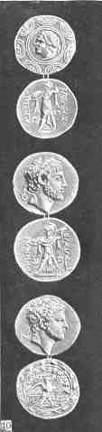 |
Рис. 40.
|
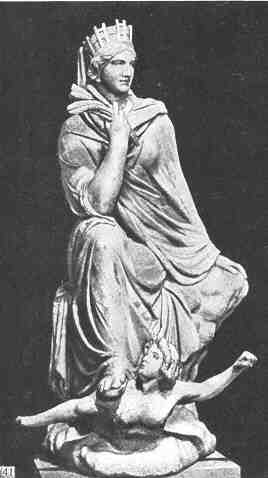
Рис. 41.
Евтихид. Тюхе, покровительница Антиохии на Оронте.
Мрамор. Начало III в. до н.э. Рим, Ватикан.
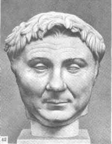
Рис. 42.
Гн. Помпей. Копия времени Августа.
Копенгаген.
Глиптотека Ню Карлсберг.
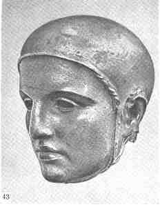
Рис. 43.
Голова фламина. Бронза. III в. до н.э.
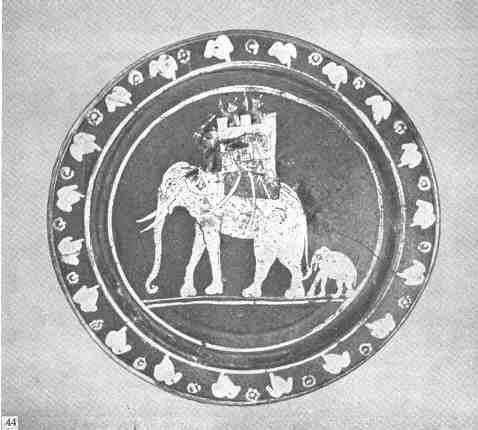
Рис. 44.
Боевой слон. Тарелка из Кампании.
III в. до н.э. Рим.
Вилла Джулия.
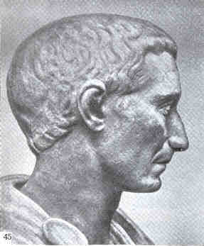
Рис. 45.
Гай Юлий Цезарь. Копия I в. н.э.
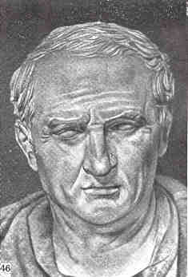
Рис. 46.
Марк Тулий Цицерон. Копия I в. н.э. Флоренция. Галерея
Уффици.
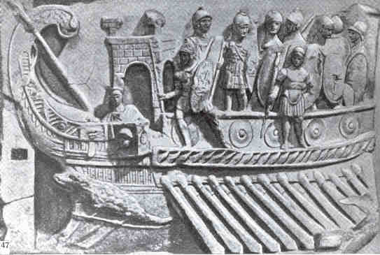
Рис. 47.
Римский военный корабль. Мраморный рельеф.
Ок. 30 г. до
н.э. Рим. Ватикан.
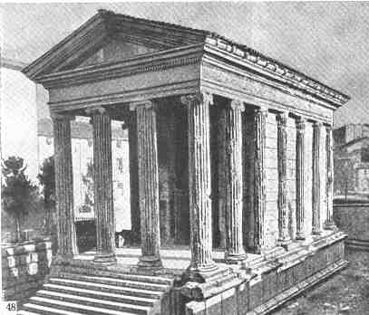
Рис. 48.
Ионический храм на Бычьем рынке (так называемый храм
Фортуны).
Рим. I в. н.э.
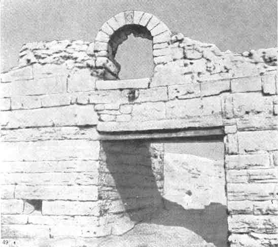
Рис. 49.
Городские ворота Херсонеса. IV в. до н.э.
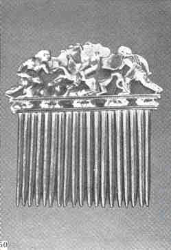
Рис. 50.
Золотой гребень из кургана Солоха. IV в. до н.э.
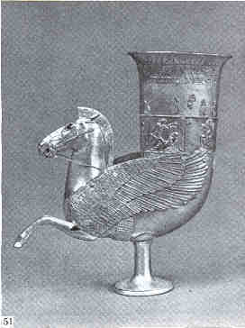
Рис. 51.
Серебрянный с позолотой ритон из кургана Уляп, V в. до
н.э.
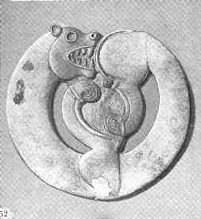
Рис. 52.
Украшение в зверином стиле из кургана Аржан в Туве. VIII
в. до н.э.
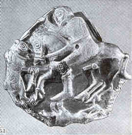
Рис. 53.
Серебрянная с позолотой пластина из клада в Летнице. IV в.
до н.э.
|
|